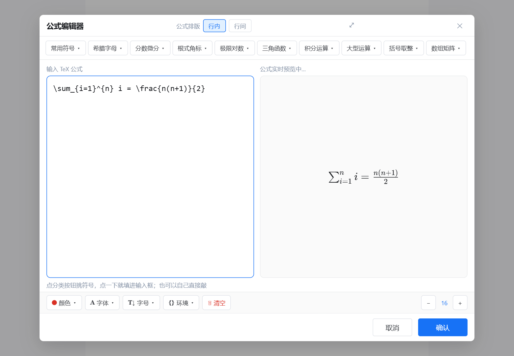
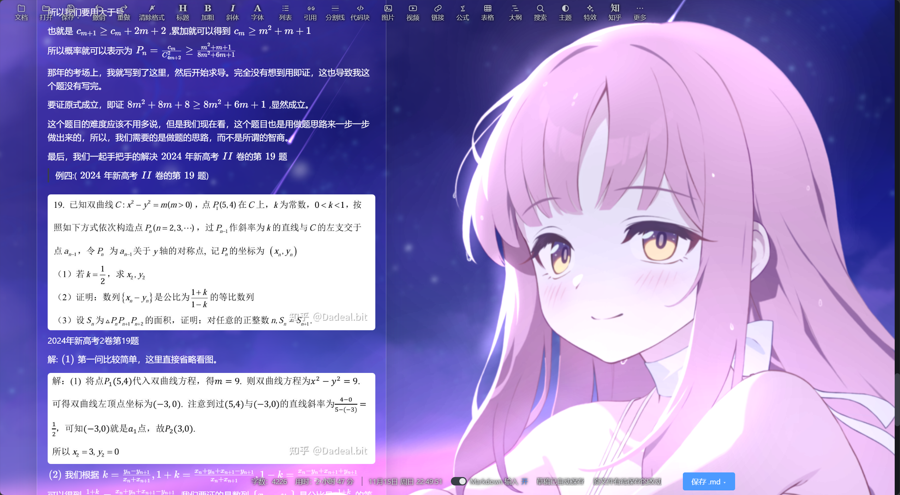
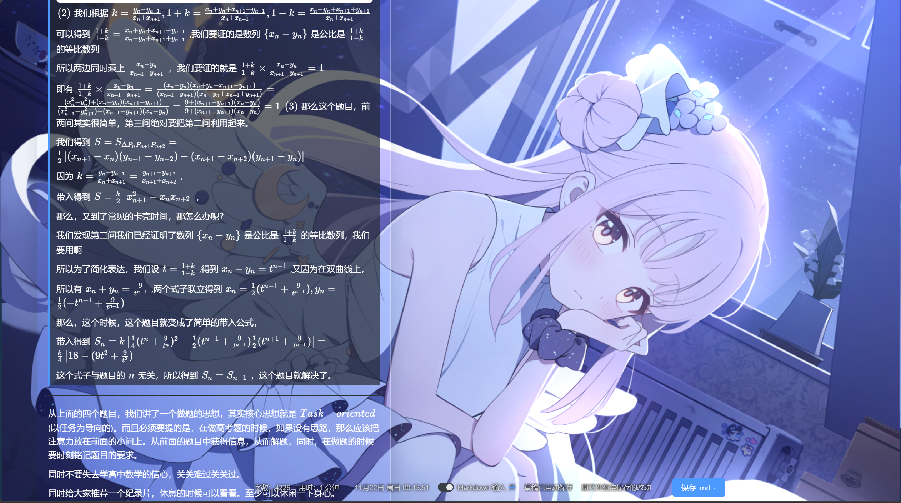

正在加载动态壁纸…
让正文浮在动态壁纸上
在完整版里调整壁纸、正文材质和构图。
Spine 场景来自《蔚蓝档案》官方游戏。
从草稿里的一行算式，到可以发给同学的一份讲义。先把思路写下来，等内容理顺了，再补上图表、编号和排版。
解释一道题时，短式子可以跟着句子走，长推导另起一行。分数、根式或矩阵可以从符号面板选，也可以用熟悉的 LaTeX 写法。

想起以前写过一个解法，只记得其中一条算式？在本地工作区打开笔记文件夹，输入公式或正文里的词，就能找到对应的文档和位置。
在本地完整版里，可以把喜欢的图片、视频或 Spine 场景放在正文后面。想专心看字时，把面板调实一点，或设置成编辑时暂停动画。


《蔚蓝档案》官方游戏 Spine 素材 · 编辑器实拍
写下推导，检查排版。
从同一份文档导出讲义。
课堂上要留答案和解析，发给学生时可以先隐藏。把它们标记好，同一份讲义就能导出学生版、教师版或知乎版。
可以直接进入在线版，也可以在发布页下载单文件 HTML，用 Edge 或 Chrome 双击打开，离线写作。
下载单文件 HTML通过「文档」新建草稿，或通过「打开」导入 .md 文件。写推导时，从工具栏的「公式」插入行内或行间公式。
点「保存 .md」保留可独立打开的文件。需要转移多篇草稿时，从「文档」菜单导出整库备份。
查看草稿迁移步骤浏览器按网站地址保存草稿。换到新地址时，可以通过文档库备份迁移。
草稿和文档里已嵌入的图片保存在当前浏览器的数据里。清除浏览器数据也会删除这些草稿，重要文档可以提前另存为 .md 或备份整个文档库。
有些导出工具把图片放在旁边的 assets 文件夹。导入后可以点「选导出文件夹修复」，选择包含 assets 的目录，让编辑器重新匹配相对路径。
点击红框查看并修改 LaTeX。多处公式有问题时，可以先运行「检查图片与公式」，再按提示修正仍未通过渲染的公式。
可以。打印和另存为 PDF 时会使用浅色样式。纸张大小、页边距和分页可以在出版设置里调整。
单文件 HTML 可用浏览器打开。独立桌面模式和知乎助手提供 Windows 版本，Wallpaper Engine 原生捕获也在 Windows 桌面模式中使用。
浏览器支持兼容的项目。场景用到的着色器、脚本和资源会影响播放效果，部分场景会显示项目预览图。也可以在 Wallpaper Engine 中播放后共享窗口。